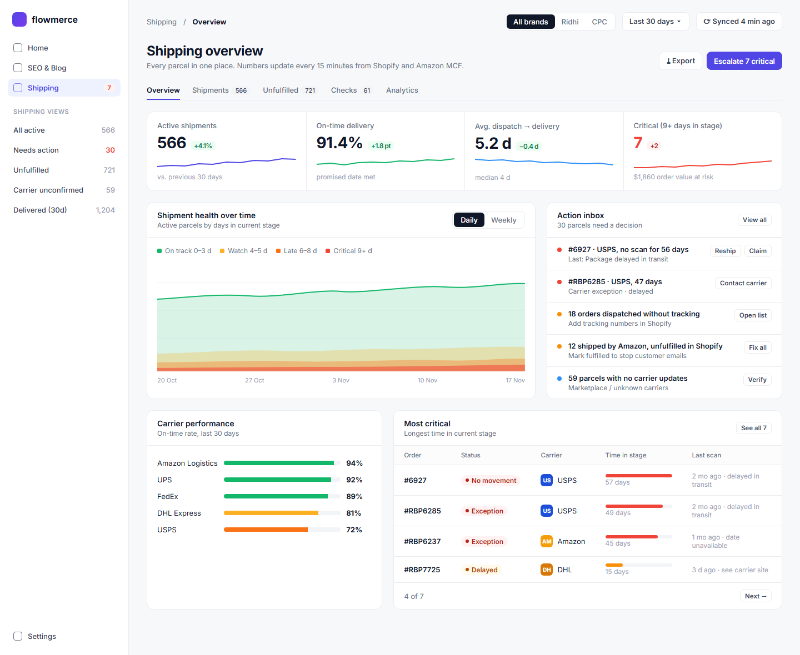
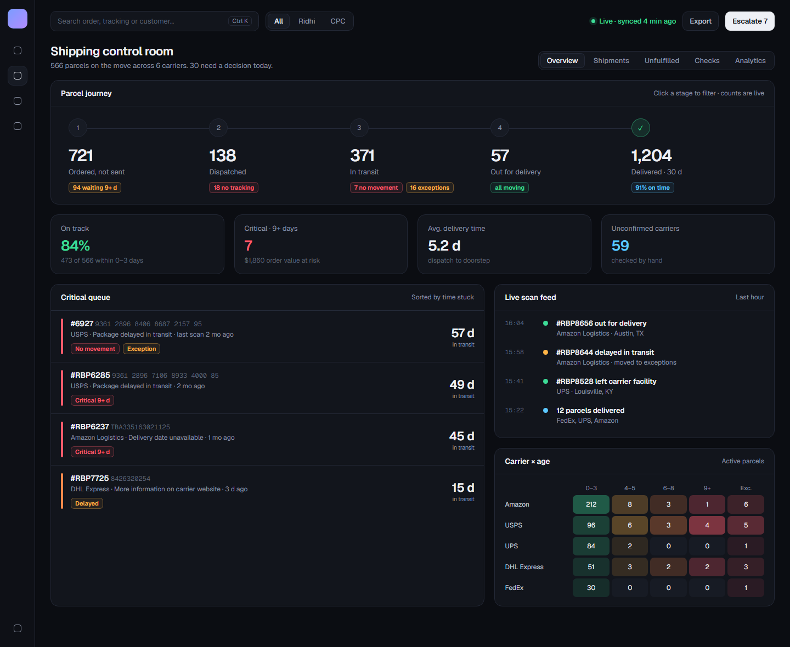
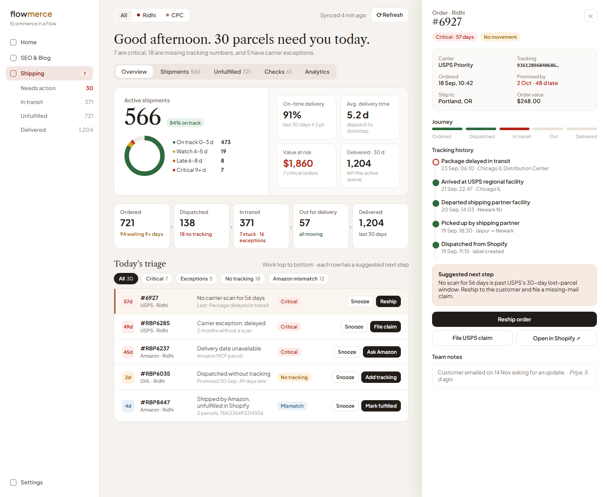

Each mockup is the Shipping Overview with your real counts (566 active, 7 critical, 721 unfulfilled). Pick one direction, or mix parts, and I will build it. Nothing in the app has changed yet.
Clean, bright analytics. Trend lines, an action inbox and carrier scorecards. Feels like a modern finance dashboard.
Dark operations console. The parcel journey runs across the top, with a live scan feed and a carrier × age heatmap.
Keeps today's brand. A plain-language greeting, a triage queue with one-click next steps, and a parcel drawer with the full tracking timeline.

A bright, precise layout in the style of the best SaaS analytics tools: thin borders, one accent colour, numbers first.
Owners and managers who want trends and accountability at a glance.

A dark operations console for the team that watches parcels all day. The journey is the main idea: every count sits on the stage where it is.
Ops staff working the screen for hours. Easy on the eyes and fast to scan.

Keeps the cream, serif and brand colours you already have, so the rest of Flowmerce still matches. It turns the screen into a to-do list for today.
A small team that wants to clear problems quickly without learning a new look.
| A · Ledger | B · Control room | C · Flowmerce warm | |
|---|---|---|---|
| Look | Bright, indigo accent | Dark, neon status colours | Cream, serif, current brand |
| Main idea | Trends and scorecards | Parcel journey and live feed | Today's to-do list |
| Matches rest of app | Needs app-wide restyle | Needs dark theme app-wide | Yes, out of the box |
| New data needed | Daily history, on-time % | Scan feed, carrier heatmap | Suggested actions, notes |
| Build effort | Medium | Medium–high | Medium |
Reply with A, B or C, or a mix (for example, "C, plus the carrier heatmap from B"). I'll build only what you approve.